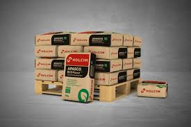
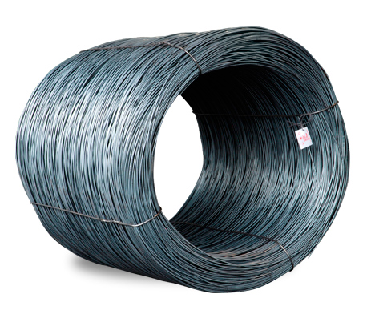
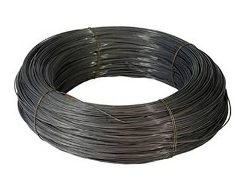

Abamat
Tu Mayorista en Acero y Cemento en Tuxtla Gutiérrez, Chiapas.
Contáctanos para más información sobre nuestros materiales¿Quiénes Somos?
Abamat es una empresa distribuidora de Materiales para Construcción con una amplia gama de productos, como cemento gris, varilla corrugada y alambrón. Nos especializamos en ofrecer productos de alta calidad a precios competitivos.
Productos

Cemento Gris envase 50 kg

Varilla Corrugada

Alambrón

Alambre Recocido
Guía para Comprar Cemento y Varilla
Si estás buscando materiales de calidad como cemento y varilla para tus proyectos de construcción, en Abamat ofrecemos una amplia selección de productos a los mejores precios. Aquí te damos algunos consejos para elegir los productos que mejor se adapten a tus necesidades.
Contacto
Teléfono: 961 61 58126
Dirección: Calle San Pedro 1525 int 5, Col. Venecia, Tuxtla Gutiérrez, Chiapas, C.P. 29020